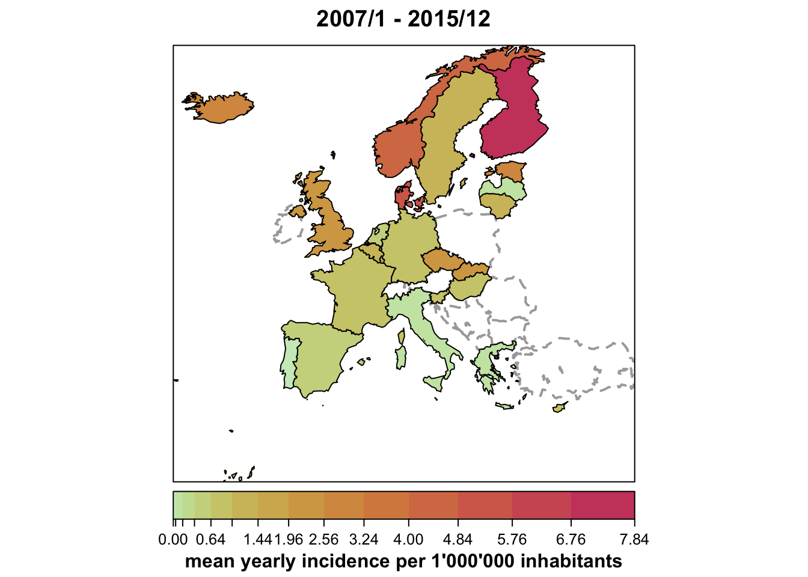

Import data from ECDC’s Surveillance Atlas of Infectious Diseases
The Hackathon Team
29 November 2016
This tutorial illustrates how one could import csv files manually downloaded from ECDC’s Surveillance Atlas of Infectious Diseases into R using the "sts" class from the surveillance package. As an example, we have downloaded the monthly number of reported cases of salmonellosis (serotype AGONA) by all countries, stored in the file ECDC_surveillance_data_Salmonellosis.csv, which we downloaded manually from the Atlas.
Import the csv file from ECDC
These data are from The European Surveillance System - TESSy, see file LICENSE.
This is how the first 4 lines of the csv file look like:
cat(readLines("data/ECDC_surveillance_data_Salmonellosis.csv", n = 4), sep="\n")## "HealthTopic","Population","Indicator","Unit","Time","RegionCode","RegionName","NumValue","TxtValue"
## "Salmonellosis","Serotype AGONA","Reported cases","N","2007-01","RO","Romania",-,""
## "Salmonellosis","Serotype AGONA","Reported cases","N","2007-02","RO","Romania",-,""
## "Salmonellosis","Serotype AGONA","Reported cases","N","2007-03","RO","Romania",-,""The first step is to import the relevant data from the csv file into R.
read_ecdc <- function (file, id = "RegionCode")
{
## import csv file
ecdc <- read.csv(file, header = TRUE, stringsAsFactors = FALSE,
na.strings = "-")
## exclude aggregate counts for EU and EU/EEA
ecdc_countries <- subset(ecdc, !RegionName %in% c("EU/EEA", "EU"),
select = -TxtValue)
## convert from long format to wide format needed by sts
ecdc_wide <- reshape(ecdc_countries[c("Time", id, "NumValue")],
idvar = "Time", timevar = id,
direction = "wide")
names(ecdc_wide) <- sub("NumValue.", "", names(ecdc_wide), fixed = TRUE)
row.names(ecdc_wide) <- NULL
attr(ecdc_wide, "reshapeWide") <- NULL
return(ecdc_wide)
}
ecdc <- read_ecdc("data/ECDC_surveillance_data_Salmonellosis.csv")
head(ecdc)## Time RO AT CY CZ DK EE EL HU IE IS IT LT LU LV MT NL NO PT SI ES SE SK BE DE FI FR UK
## 1 2007-01 NA 0 0 0 0 0 0 0 0 0 0 0 0 0 0 0 0 0 0 2 1 1 2 2 1 5 6
## 2 2007-02 NA 0 0 0 4 0 0 0 0 0 0 0 0 0 0 0 2 0 0 0 0 0 1 6 2 7 5
## 3 2007-03 NA 1 0 1 7 0 0 1 0 0 2 0 0 0 0 2 1 0 0 1 0 0 0 3 3 4 6
## 4 2007-04 NA 0 0 1 19 0 0 0 1 0 0 0 0 0 0 2 9 0 0 1 3 0 1 3 1 6 7
## 5 2007-05 NA 0 0 0 10 0 0 0 0 0 0 0 0 0 0 2 2 0 0 1 1 2 0 0 1 5 5
## 6 2007-06 NA 0 0 2 2 0 0 1 0 0 2 0 0 0 0 2 4 0 0 0 1 1 3 3 15 3 11tail(ecdc)## Time RO AT CY CZ DK EE EL HU IE IS IT LT LU LV MT NL NO PT SI ES SE SK BE DE FI FR UK
## 103 2015-07 0 1 0 0 0 0 0 0 NA 0 1 0 0 0 0 0 0 0 1 0 2 0 0 5 1 11 11
## 104 2015-08 0 2 0 1 3 0 0 0 NA 0 0 0 0 0 0 3 2 0 0 1 0 0 0 7 0 6 10
## 105 2015-09 0 1 0 3 1 0 0 1 NA 0 2 0 0 0 0 0 1 0 0 1 0 0 0 9 0 13 13
## 106 2015-10 0 1 0 0 2 0 0 1 NA 0 1 0 0 0 0 1 2 0 0 0 1 0 0 20 1 8 25
## 107 2015-11 0 2 0 1 0 0 0 0 NA 0 0 0 0 0 0 1 0 0 0 0 0 0 0 7 0 9 14
## 108 2015-12 0 2 0 1 0 0 0 0 NA 0 0 0 0 0 0 2 1 0 0 0 2 0 0 6 0 3 15Import map data
The "sts" class can be used without a supplementary map, but incorporating one enables nice visualizations. We retrieve a suitable GeoJSON dataset for Europe from the GitHub repository of the open knowledge foundation.
library("sp")
read_map_Europe <- function ()
{
## Read NUTS1 level data for Europe from open knowledge foundation
map <- rgdal::readOGR("https://raw.githubusercontent.com/datasets/geo-nuts-administrative-boundaries/master/data/nuts_rg_60m_2010_lvl_1.geojson", "OGRGeoJSON", verbose = FALSE)
## omit "FR9" (French Guiana) [no offense] for a more compact map
map <- map[map$NUTS_ID != "FR9",]
## Make a factor variable containing the country
map$COUNTRY <- factor(substr(map$NUTS_ID,1,2))
levels(map$COUNTRY)
## Union polygons by country
rgeos::gUnaryUnion(map, id = map$COUNTRY)
}
## if you cannot get rgdal to work on your system, just use the stored file
file_map_Europe <- "data/map_Europe.RData"
if (file.exists(file_map_Europe)) {
load(file_map_Europe)
} else {
map_Europe <- read_map_Europe()
save(map_Europe, file = file_map_Europe, compress = "xz")
}summary(map_Europe)## Object of class SpatialPolygons
## Coordinates:
## min max
## x -25.85482 44.80830
## y 27.69212 71.17308
## Is projected: FALSE
## proj4string :
## [+proj=longlat +ellps=WGS84 +towgs84=0,0,0,0,0,0,0 +no_defs]plot(map_Europe)Load and merge population data
population <- read.csv("data/population-eurostat.csv",
skip = 11, sep = ";", na.string = ":")
idx <- pmatch(names(ecdc)[-1], population$NUTS)
stopifnot(sum(is.na(idx)) == 0)
year <- paste0("X",unlist(lapply(strsplit(ecdc$Time, split="-"), function(x) x[1])))
popMatrix <- t(population[idx,year])
colnames(popMatrix) <- as.character(population$NUTS)[idx] Create an "sts" object
We can now create an "sts" object from the matrix of counts and the map containing a geographic representation of the columns of the count data.
library("surveillance")
(start <- as.numeric(strsplit(min(ecdc$Time), split="-")[[1]]))## [1] 2007 1ecdc_sts <- sts(ecdc[,-1], start = start, frequency = 12, # monthly data
population = popMatrix,
map = map_Europe) # row.names(map_Europe) are matched against colnames(ecdc)Now having the data as an object of the "sts" class, the surveillance package offers functionality for visualization, monitoring and modelling of the data. Some basic visualizations are shown below, the monitoring and modelling features are illustrated in other tutorials on this site or vignettes of the surveillance package.
"sts" objects can also be converted to the well-known "xts" class, to the basic "ts" class, and to a data.frame via the associated as.data.frame() method. See this tutorial.
Visualizations
Time series of cases aggregated over all countries
plot(ecdc_sts, type = observed ~ time) # see help("stsplot_time") for optionsThe above overall time series plot is incomplete because of missing counts in some countries for some of the months in the beginning and end of the time period.
Multivariate time series (of selected countries)
topcounts6 <- names(head(sort(colSums(observed(ecdc_sts)), decreasing=TRUE), 6))
plot(ecdc_sts, units = topcounts6)Currently, manual efforts are required to plot the incidence (a population argument as for the spatial plots below is in development):
local({
observed(ecdc_sts) <- observed(ecdc_sts) / population(ecdc_sts) * 1000000
plot(ecdc_sts, units = topcounts6, ylab = "Incidence (per 1'000'000)")
})
Map of country-specific disease counts accumulated over time
plot(ecdc_sts, type = observed ~ unit) # see help("stsplot_space") for optionsTo change the color key to a color-blind friendly version:
(COLS <- viridis::viridis_pal()(9))## [1] "#440154FF" "#472D7BFF" "#3B528BFF" "#2C728EFF" "#21908CFF" "#27AD81FF" "#5DC863FF" "#AADC32FF"
## [9] "#FDE725FF"plot(ecdc_sts, type = observed ~ unit, col.regions = COLS)Map of country-specific disease incidence
plot(ecdc_sts, type = observed ~ unit,
population = 1000000/9, # [this shorthand requires surveillance > 1.12.2]
sub = "mean yearly incidence per 1'000'000 inhabitants")
Animation of monthly disease counts from 2011 to 2015
animate(ecdc_sts, tps = 49:96, sleep = 0, verbose = FALSE,
timeplot = list(as.Date = TRUE)) # [requires surveillance > 1.12.2]## see help("animate.sts") for optionsThe animation package can be used to store such an animation in other formats, e.g., Flash, GIF, HTML pages, PDF and videos. The help("animate.sts") contains an example.